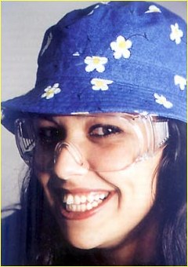

|
|
|
-== ЧЛЕНОВЕ -- КРАТКА ИСТОРИЯ -- ИНТЕРВЮТА ==- "Блясък": Лили Йончева Непоправима оптимисткаНе може да не сте я забелязали - енергична, непринудена, с усмивка, широка и пълна с много настроение, с дълги черни коси и силно индивидуален, артистичен стил на обличане. Да, това е 22-годишната Лили, перкусионистката от "Ку-ку бенд". Всяка делнична вечер нейният заразителен смях ни напомня, че започва най-гледаното българско шоу - "Шоуто на Слави Трифонов". Любопитно ми бе да науча защо женствено момиче като нея е избрало нетипичните за нежния пол ударни инструменти и най-вече какво поддържа вечната й лъчезарна усмивка. МузикатаС изненада разбрах, че за известно време Лили е била цигуларка. Още от малка проявила интерес към музиката - естествено било при майка виолистка да започне да свири на цигулкиа. Ентусиазмът й към този инструмент обаче бързо секнал, защото "макар цигулката да е хубав инструмент, тя е доста скучна и просто не е за мен". След като скъсала с цигулката, дъщерите на покойния проф. Палиев, чиято възпитаничка е, я попитали: "Вече имаш известно музикално образование, защо не продължиш?" И така, от шести клас, Лили започнала с ударните инструменти. Те задържали интереса й най-вече заради разнообразието - "омръзне ли ми на едно, прехвърлям се на друго - маримба, барабани, перкуси. На перкусите, на които свиря в Бенда, ми харесва и това, че са по-лесни за носене от барабаните". С ударни инструменти Лили завършва музикалното училище "Любомир Пипков", а в момента е четвъртокурсничка в Софийския университет, специалност музика. НачалотоВлизането й в "Ку-ку бенд" станало много случайно. Един ден, когато видяла, че перкусионистът на групата напуснал, се замислила дали не им трябва музикант като нея. Няколко дни след като близък приятел я свързал с групата и Венко и Евгени я прослушали, Лили вече записвала с Бенда албума "Няма не искам". За първото си предаване казва: "Чувствах се много странно - сред огромен екип, в който никого не познавам". Сега групата е нейно второ семейство, а студиото - втори дом. На въпроса ми какво е усещането да си единствена жена в "Ку-ку бенд", отговаря: "Аз съм общителна и съм свикнала с мъжката компания. Освен това в екипа има много други жени". РаботатаЛили е доволна от съдбата си и е благодарна на късмета си. Радва се, че е от щастливците, които работят това, което обичат най-много. Споделя, че не е амбициозна, но се стреми към развитие, защото няма човек, който да е напълно завършен. Не страда от сценична треска. Преди шоу й е нужна само концентрация: "Стягам се, излизам на сцената и това е". В началото й било трудно да свикне с ежедневния ритъм на работа, но сега вече не й е проблем. "В петък обаче се чувствам малко уморена", признава тя. Когато става дума за гостите на шоуто споделя: "Аз лично бих поканила Стинг, но него бих гледала като зрител от публиката". За самото шоу казва: "Понякога на живо е страхотно хубаво и смешно, а после по телевизията атмосферата е друга". Попитах я за личния й живот, а тя се засмя "Какъв личен живот!? Аз живея в работата си." Стилът й"Обичам живите цветове - червено, синьо. Понякога са ми нужни три дни обиколки по магазините, за да си намеря нещо по мой вкус" обяснява Лили и се ядосва, че стилът, който се налага в момента, бил тип "водещ на MTV". Казва, че не е суетна, но от време на време обича да се глези по женски. Радва се на комплиментите, някои от които получава директно от улицата: "Много са смешни и сладки, но за съжаление бързо ги забравям". УсмивкатаИскрено се изненадах, когато Лили заяви, че смята усмивката си за проблем. Смешно й става и когато я питат дали се смее по сценарий. "Няма такова нещо, аз съм адски естествен човек", обяснява тя. Радва се, че чувства работата си по-скоро като забавление. Смехът е и този, който я зарежда с енергия. "Непосилно ми е да се усмихвам единствено вечер, когато ми се спи, и сутрин, докато не си намеря чашата с кафето." Свободно време"Нямам такова. Често и в събота и неделя работя", не крие тя, но все пак уточнява, че когато има време, обича да гледа филми - откъсват я от реалността. Любимите й актьори са Робърт де Ниро и Никълъс Кейдж. Страхотен фен е на Стинг и "Дейв Матюс бенд". Не крие възхищението си от излъчването на Дженифър Лопес. Като човек на разнообразието слуша всякаква музика и обича да се забавлява в клубове с музика на живо. Плуването е любимият й спорт, но не й остава време за него. "Все пак се надявам да си наваксам на морето". ЛичноЛили
е открит човек и когато нещо не й
харесва, си го казва. Чувствителна е и
лесно се засяга, но пък бързо й минава.
Не е по-плановете - предпочита
импровизацията. Въпреки че се харесва
такава, каквато е, опитва се да се
избави от някои недостатъци, като
честата смяна на настроения. За мъжете
казва, че няма определен тип - или някой
й харесва, или не. Мъжът до нея не трябва
да бъде ревнив, защото тя е
непрекъснато в обкръжение на мъже. "Важно
е да се сработиш с човека, с когото
живееш. Съжителството е трудно нещо",
казва с усмивка в заключение Лили.
© 2001 СлавиWeb. Всички права запазени. |